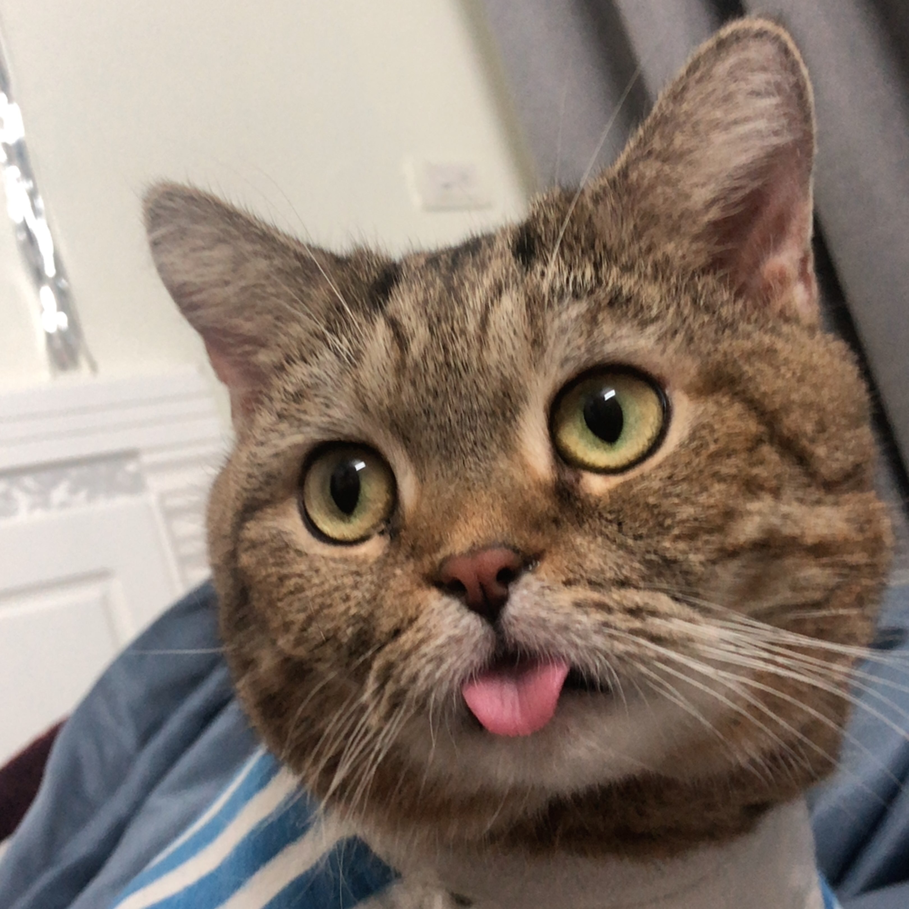

I'm looking forward to studying in this term and it's such an honor to meet you guys in Canada but not elsewhere. My name is Ha Anh, but you can call me Hari since it's easier to read. I'm 18 years old and come from Vietnam so if you are interested in Vietnamese food, do you want to go eat Pho with me? Then let me introduce a bit about myself.
First of all, I love to hang out and get to know lots of people because I want to broaden my friends circle to gain knowledge about different cultures around the world.
Secondly, I am a music lover. I listen to many types of music but mostly RnB, and even K-pop, US/UK, Chinese or Japanese songs. I cannot live without music since it heals my soul and helps me express feeling which I can't say.
Moreover, I also have a cat whose name is Do which means dollar in English. My mom gave it to him so that he could help us earn money :)))). Besides, I would like to bring him to Canada soon, or else I'm going to miss him so badly.
Another thing about me is I am addicted to playing games on Steam, especially Paper Bride or any game which has a good plot. I can play games all day and I know for sure that is not a good habit but when I into something I can not stop.
my favourite gameLastly, as an avid book lover, the feeling when I create fake scenarios in my head before sleep helps me a lot with sleeping problems, thus, reading novels is one of my best activities time of the day.